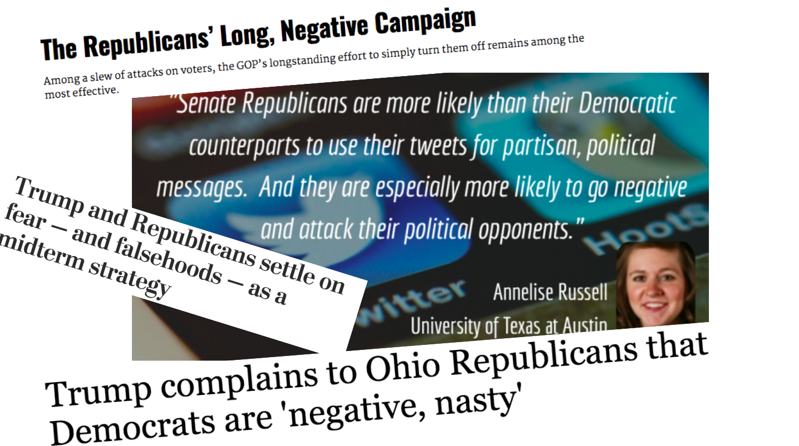
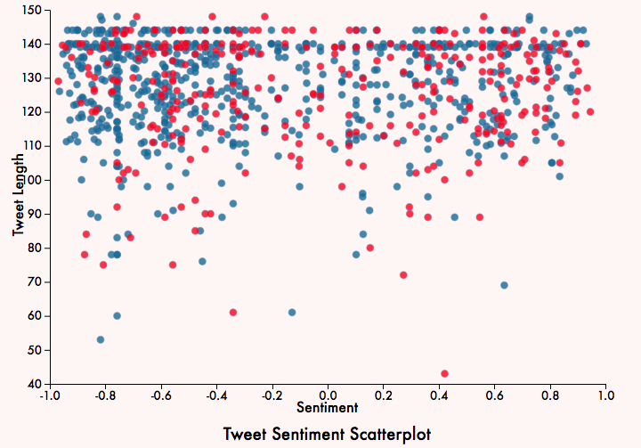

ABOUT THIS VISUALIZATION
By Ki Ki Chan and Tati Doyle

In the past decade, Twitter has become a news source in its own right. Almost any politician now uses Twitter to reach their constituents, and the platform itself is often the place where news breaks. In the liberal media, there exists a perception that Republicans often use "scare tactics" to get voters to support them. We were interested in seeing whether that was true on controversial issues such as gun control and abortion, so we created this visualization. The code can be found here on GitHub.
METHODOLOGY
We used an
open dataset from Kaggle that contained nearly 85,000 tweets from all of the US representatives through May of 2018. We used a keyword-based classification algorithm to sort the tweets by topic, such as immigration or gun control. We chose four topics that we thought were controversial and would have varying language around them:
incarceration, immigration, abortion, and gun control. We then ran each tweet through the
NLTK VADER sentiment analyzer, giving it a sentiment score between -1 and 1, which we graph in our visualization. To build this visualization, we used D3, a JavaScript library for visualizing data with HTML, SVG, and CSS.
This video explains how to use the visualization and highlights specific features.
